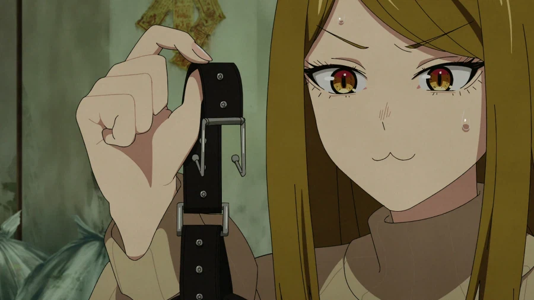
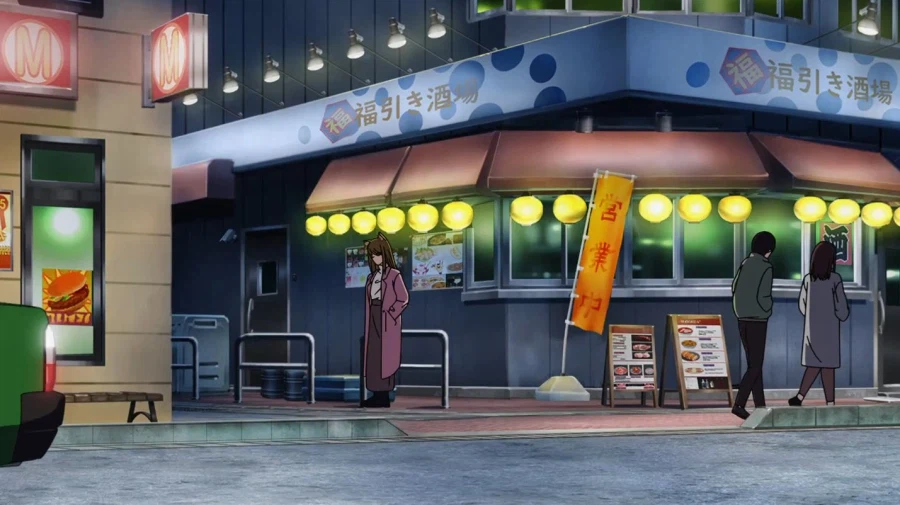

간사이네코
개그가 좀 재미없는거만 빼고는
외모 성격 행동 모두다 정상
주변에 이상한 애들 안꼬였으면 일반 사람보다도 더 정상적으로 살았을 수인임


간사이네코
개그가 좀 재미없는거만 빼고는
외모 성격 행동 모두다 정상
주변에 이상한 애들 안꼬였으면 일반 사람보다도 더 정상적으로 살았을 수인임
친구들한테 추천하고 매주 금요일마다 후회중이다
집주인 자지좀 그만나왔으면 좋겠다 ㅅㅂㅋㅋㅋㅋ
드립치고 혼자 쳐웃다가 주변반응 보고 우는거 개귀여웠음ㅋㅋㅋ
나는 이모코의 기둥서방이 되고싶어요
야니네코에서 수인 설정은 그 어떤 만화 엘프처럼 이상한 취급임?
아니면 그냥 애니에서 나오는 주인공들이 특별하게 이상한거임?
ㅇㅇ
동생네코가 제일났더라
간사이랑 이모코 대호감임…
동생이 있지만.. 학생이니 빼면 맞긴해
반전으로 성욕 심한걸수도있음
야니네코를 모를 정도의 일반인이면 그대로 모르는게 좋을 가능성이 높음...
보고나서 이 역겨운걸 어떻게 보는거냐 라는 생각이 머리에 가득차게 될 수도 있음